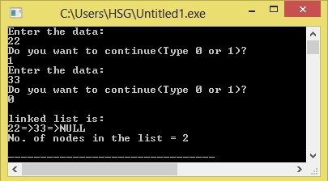

/*C Program to implement Single Linked List*/
#include<stdio.h>
#include<stdlib.h>
#include<malloc.h>
void main()
{
struct node
{
int num;
struct node *ptr;
};
typedef struct node NODE;
NODE *head, *first, *temp = 0;
int count = 0;
int choice = 1;
first = 0;
while (choice)
{
head = (NODE *)malloc(sizeof(NODE));
printf("Enter the data:\n");
scanf("%d", &head-> num);
if (first != 0)
{
temp->ptr = head;
temp = head;
}
else
{
first = temp = head;
}
fflush(stdin);
printf("Do you want to continue(Type 0 or 1)?\n");
scanf("%d", &choice);
}
temp->ptr = 0;
/* reset temp to the beginning */
temp = first;
printf("\nlinked list is:\n");
while (temp != 0)
{
printf("%d=>", temp->num);
count++;
temp = temp -> ptr;
}
printf("NULL\n");
printf("No. of nodes in the list = %d\n", count);
}
